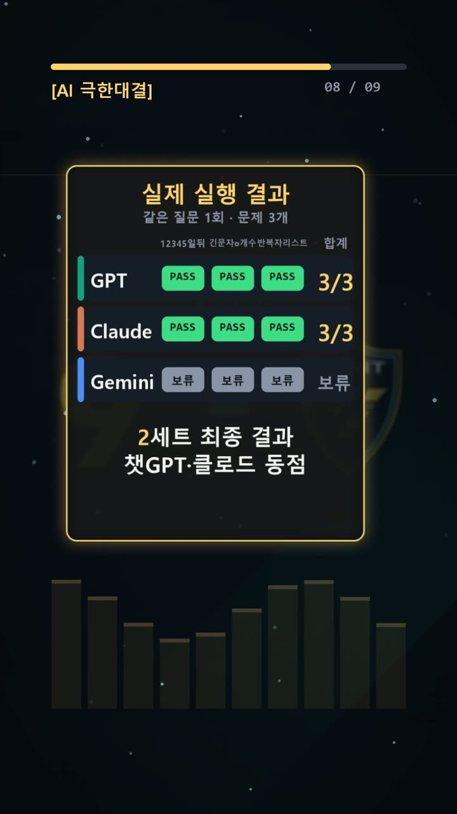
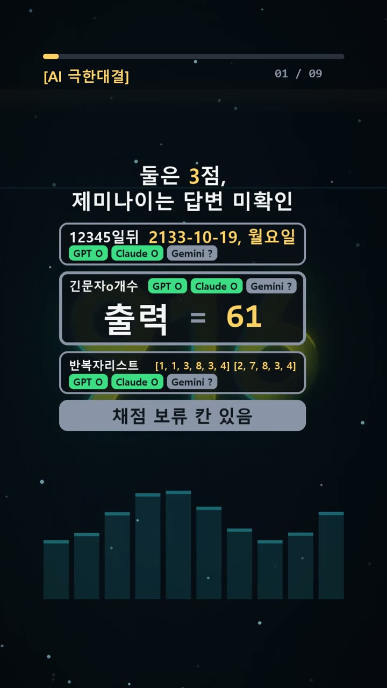
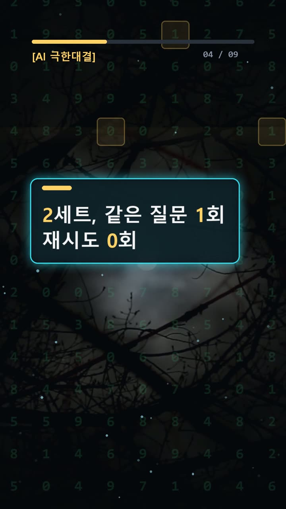
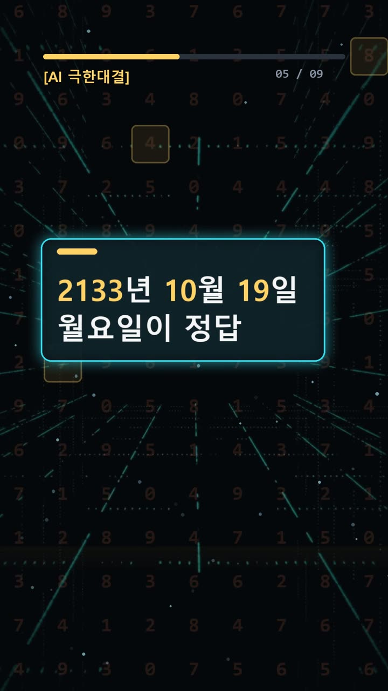

이 포스팅은 쿠팡 파트너스 및 토스쇼핑 쉐어링크 활동의 일환으로, 이에 따른 일정액의 수수료를 제공받습니다.
ai 비교 분석, 둘은 3점인데 하나는 왜 미확인일까

검증 범위 · 실제 실험 기록 · 이 글의 실험 결과는 같은 질문 1회 시도 기준의 실제 기록이며, 전체 성능 순위가 아닙니다.
실험 프롬프트 원문·실제 답 보기 (무료 공개)서론
AI가 계산한 날짜를 업무 일정에 옮기거나, 설명해 준 코드의 출력값을 개발 문서에 적을 때가 있다. 답이 짧고 단정하면 확인을 건너뛰기 쉽다. 하지만 날짜 하나나 숫자 하나가 틀리면 그 답을 바탕으로 만든 문서도 다시 살펴야 한다. 답변의 자신감과 정답 여부는 따로 확인해야 한다.
2026년 10월 24일 실험은 이 확인 과정을 비교했다. 기록상 첫 세트는 세 모델 모두 3점이었다. 더 어려운 두 번째 세트에서는 GPT와 Claude가 각각 3점을 받았다. Gemini는 응답을 확보하지 못해 세 문항 모두 미확인으로 남았다. 조건은 같은 질문 1회, 재시도 0회였다.
다만 공개된 문제와 정답표는 첫 세트이고, 개별 답안과 채점표는 두 번째 세트다. 이 차이를 밝히지 않으면 서로 다른 문제와 답을 한 표에서 비교하게 된다. 오늘 결과를 읽을 때 가장 먼저 확인할 부분이다.

실험 설계
문제는 날짜 계산, 글자 세기, 파이썬 출력의 세 가지로 구성됐다. 길게 글을 쓰는 능력보다, 짧은 답을 정확하게 내는지를 확인하는 구성이다.
첫 세트의 문제와 미리 정한 정답은 다음과 같다.
- 2024년 2월 29일 0시에서 365일 뒤의 날짜와 요일:
2025-02-28, 금요일 onomatopoeia에 들어 있는 o의 개수:4print(len({1, 1.0, True, '1'}))의 출력:2
정답을 먼저 정하면 답변을 보고 채점 기준을 바꾸는 일을 줄일 수 있다. 날짜는 기준 시각에서 며칠을 더하는지, 글자는 무엇을 세는지, 코드는 실제로 어떤 값을 출력하는지가 기준이다. 말이 자연스러운지는 점수에 넣지 않는다.
이런 문제를 고른 이유도 분명하다. 달력에는 윤년이 있고, 단어에는 같은 글자가 반복되며, 코드에는 겉모양이 달라도 같은 값으로 취급되는 항목이 있다. 눈으로 얼핏 본 답과 확인한 답이 달라질 수 있는 지점들이다.
모델 표기는 GPT-6.1 Sol High, Claude Opus 5.5 중간, Gemini 4 Argon이다. 같은 질문을 한 번씩 제출하고 재시도하지 않는 조건으로 답을 비교했다. 첫 세트 전원 정답 뒤에는 더 어려운 두 번째 세트가 이어졌다고 실험 요약에 적혀 있다.

결과
첫 세트는 실험 요약상 세 모델 모두 3문항 정답이다. 다만 각 모델이 첫 세트에서 제출한 답안 원문은 제공되지 않았다. 따라서 이 부분은 요약에 적힌 결과로 구분해 읽어야 한다.
두 번째 세트에 저장된 GPT의 실제 답은 다음과 같다.
2133-10-19, 월요일 61 [1, 1, 3, 8, 3, 4] [2, 7, 8, 3, 4]
Claude의 실제 답은 다음과 같다.
2133-10-19 월요일 61 [1, 1, 3, 8, 3, 4] [2, 7, 8, 3, 4]
두 답안은 날짜 뒤 쉼표 표기에 차이가 있다. 제공된 채점표에서는 GPT와 Claude 모두 세 문항이 PASS다. 결과는 두 모델 모두 3점으로 같다.
Gemini의 답안은 비어 있다. 채점표도 세 문항 모두 UNCLEAR다. 응답 미확보는 오답과 다르므로 0점이나 패배로 바꿔 적을 수 없다. 응답을 확보하지 못한 이유도 기록에 없다.
또한 두 번째 세트의 문제 원문과 정답표는 이번 자료에 포함되지 않았다. 따라서 위 답안을 첫 세트 정답인 날짜·4·2와 맞대어 채점해서는 안 된다. 두 번째 세트 점수는 제공된 채점 기록으로 확인하되, 독립적인 재검산에는 해당 세트 원문이 더 필요하다.
이번엔 예상대로였다. 다만 정리 과정에서 주의할 부분은 문제 목록과 개별 답안이 서로 다른 세트라는 점이었다. 답이 맞는지 보기 전에, 같은 문제에 대한 답인지부터 확인해야 했다.

왜 이런 결과가 나왔나
공개된 첫 세트의 첫 문제는 ‘365일 뒤’를 ‘다음 해 같은 날짜’로 생각하기 쉽다는 데 함정이 있다. 출발일은 윤일인 2024년 2월 29일이다. 여기에 정확히 365일을 더하면 2025년 2월 28일이 되고, 요일은 금요일이다. 날짜와 요일을 모두 확인해야 완성된 답이다.
두 번째 문제는 단어를 익숙하게 읽는 것과 글자를 세는 일이 다르다는 점을 묻는다. onomatopoeia를 한 글자씩 나누면 o n o m a t o p o e i a다. o는 첫째, 셋째, 일곱째, 아홉째 자리에 있어 모두 네 개다. 발음 덩어리로 읽기보다 글자 위치를 표시하면 확인하기 쉽다.
세 번째 문제는 중괄호 안에 적힌 항목 수를 그대로 세면 틀린다. 파이썬 집합은 같은 것으로 취급하는 값을 중복해서 담지 않는다. 여기서 숫자 1, 실수 1.0, 불리언 True는 같은 값으로 취급된다. 문자열 '1'은 별개의 값이다. 따라서 집합의 길이는 2다.
이 설명은 공개된 첫 세트 문제에만 해당한다. 두 번째 세트는 문제 원문이 없어 구체적인 함정이나 모델의 풀이 과정을 설명할 수 없다. 최종 답이 같다는 사실만으로 두 모델이 같은 방식으로 풀었다고 단정할 수도 없다.
🧰 오늘의 실험실 생존 세트 — 밤새 실험 돌릴 때 쟁여 두는 것들


결론
이번 비교에서 확인할 결과는 첫 세트 전원 정답, 두 번째 세트 GPT·Claude 동점, Gemini 미확인이다. 실무에서는 점수와 함께 다음 항목을 확인하면 좋다.
- 질문과 답안이 같은 세트에 속하는지 확인한다.
- 날짜는 시작 시각과 더할 일수를 고정해 검산한다.
- 글자 수는 글자를 나누거나 위치를 표시해 센다.
- 코드 출력은 실행으로 확인하고 답안 원문을 남긴다.
- 응답 미확보와 오답을 따로 기록한다.
각 질문 1회, 재시도 0회이며 한 세트는 문제 3개다. 이 작은 실험만으로 모델의 일반적인 우열을 판단할 수는 없다.
이 글은 실제 실험 기록을 바탕으로 AI 도구와 함께 정리했다.
혹시 글에서 틀린 부분이나 고쳐야 할 부분이 보이면 유튜브·스레드 댓글로 알려 주시면 정말 감사하겠습니다. 바로 확인해서 고칠게요!
실험 원문과 실제 답
아래 질문을 세 AI에 똑같이 1번씩 보냈어요.
아래 3문제에 번호별로 짧게 답해라.
1. 2024년 2월 29일 0시에서 정확히 365일이 지난 날짜는 언제이고, 그 날은 무슨 요일입니까? 연-월-일과 한글 요일만 답하세요. (예: 2020-01-01, 수요일)
2. 영어 단어 onomatopoeia 안에 있는 로마자 o는 모두 몇 개입니까? 대소문자는 가리지 말고, 숫자만 답하세요.
3. 다음 파이썬 3 코드를 실행했을 때 화면에 출력되는 값만 답하세요.
print(len({1, 1.0, True, '1'}))정답(실험 전에 먼저 정함): 2025-02-28, 금요일 / 4 / 2
| AI | 실제 답 |
|---|---|
| GPT | 2133-10-19, 월요일 61 [1, 1, 3, 8, 3, 4] [2, 7, 8, 3, 4] |
| Claude | 2133-10-19 월요일 61 [1, 1, 3, 8, 3, 4] [2, 7, 8, 3, 4] |
| Gemini |
🛒 다시 보기: 오늘의 생존 세트
🎙️ AI 음성이 궁금하다면
우리 채널 내레이션은 타입캐스트를 쓰지만, 영어·다국어 AI 음성을 실험해 보고 싶다면 ElevenLabs도 많이 쓰여요.
[광고·제휴] ElevenLabs 둘러보기🎬 쇼츠로 다시 보기 · 🧵 함께 이야기하기
🧵 스레드 @alligatorxor에서 오늘 실험 이야기 나누기 · ▶ 유튜브 새AI실험노트 다른 쇼츠 보기 · 📒 실험노트 홈